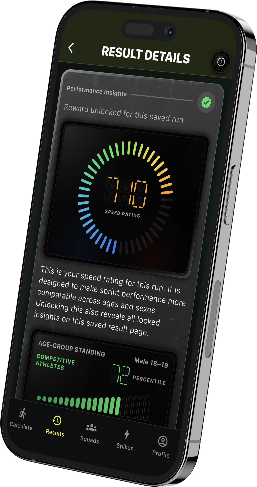
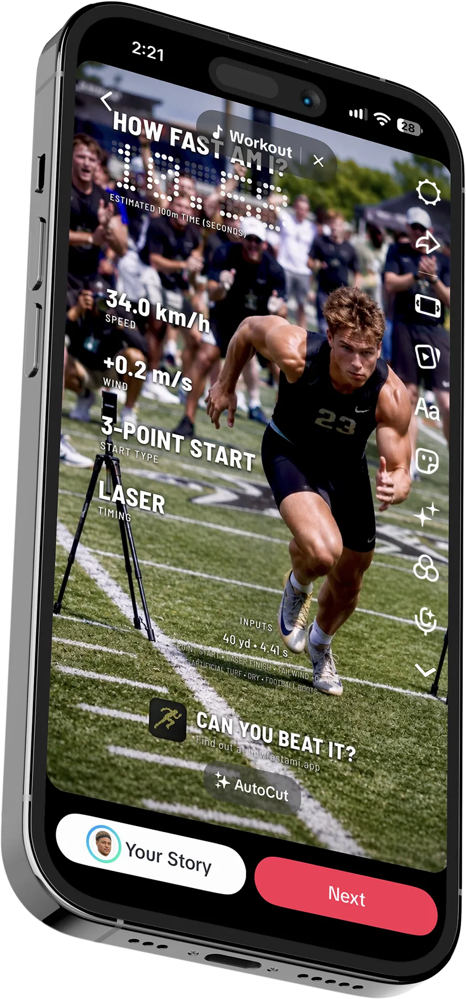

Converter um sprint cronometrado
Comece com a distância e o tempo. Para mais contexto, adicione o tipo de início, método de cronometragem, superfície, calçados, vento ou altitude.
Conversor de tempo de sprints
Cronometrou um sprint de 30 m, 60 m ou outra distância? Informe a distância e o tempo para estimar sua marca nos 100 m. Inclua detalhes sobre a saída, a cronometragem e o piso para ajustar a estimativa.
Sem necessidade de um dispositivo vestível. Comece com uma distância e um tempo.


Use uma estimativa de 100m para colocar sprints mais curtos em uma escala comum e rastreie como suas performances mudam ao longo do tempo.
Comece com a distância e o tempo. Para mais contexto, adicione o tipo de início, método de cronometragem, superfície, calçados, vento ou altitude.
Encontre sua velocidade média em mph ou km/h, depois coloque no contexto com uma pontuação de velocidade, comparações ajustadas pela idade e resultados compartilháveis.
Recrute atletas, forme sua equipe de relays, desenvolva atributos, persevere por melhores tempos pessoais, suba as líderanças e colete medalhas ao longo do caminho.
Adicione a distância e o tempo que você registrou. Use o modo Simples para uma estimativa rápida.
No modo Detalhado, informe ao app como você começou e como o relógio foi acionado. Uma partida em voo dá um aceleração, enquanto uma partida em pé inclui a aceleração a partir do repouso.
Use a estimativa para comparar sprints em diferentes distâncias e rastrear seu progresso.

Exemplo: 60 m em 7,50 segundos resultam em uma estimativa de 11,64 segundos para os 100 m.
No modo “Competição de pista” do app, selecione “Masculino” e informe 60 m e 7,50 segundos. Indique saída com bloco, cronometragem eletrônica, sapatilhas com pregos, pista de borracha seca e vento nulo. Deixe a idade e a altitude em branco.
O tempo de 11,64 segundos é uma projeção. Uma marca oficial nos 100 m exige uma corrida de 100 m cronometrada.


Uma forma de usá-lo
Um sprint de 40 jardas em 4,50 segundos tem velocidade média de 18,2 mph (29,3 km/h) ao longo de todo o percurso. Use o modo de 40 jardas para estimar o tempo nos 100 m considerando seu método de cronometragem e as condições da corrida.


Compartilhe seu salto
Salve o resultado do seu sprint como um adesivo transparente e coloque-o sobre uma foto ou um vídeo seu. Depois, compartilhe em um Story do Instagram ou publique no TikTok. Você também pode salvar o resultado como um vídeo separado.


Rali de equipe
Monte uma equipe de relays com habilidades complementares. Gerencie o desempenho, aprimore as trocas, lidere as condições da corrida e descubra se seus quatro podem entregar quando for o momento.
Pronto quando você estiver
Traga a distância e o tempo da sua próxima corrida.